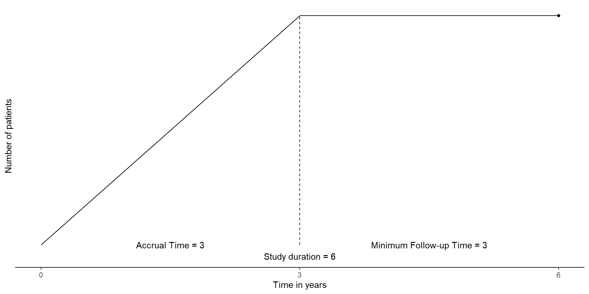

![]()
flowchart TB
A[Clinical Trial Design] --> AA[Time-to-Event Endpoints]
AA --> AAA[Two-Arms]
AAA --> AAAA[Fixed Design]
AAA --> AAAB[Group-Sequential Design]
AA --> AAB[One Arm]
A --> AB[Binary Endpoints]
AB --> ABA[Two-Arms]
ABA --> ABAA[Fixed Design]
ABAA --> ABAAA[Exact Computation]
ABAA --> ABAAB[Z-pooled]
ABAA --> ABAAC[Z-unpooled]
ABA --> ABAB[Group-Sequential Design]
ABAB --> ABABA[Z-pooled]
AB --> ABB[One-Arm]
ABB --> ABBA[Exact Computation]
ABB --> ABBB[Non-exact Computation]
Comparison of Sample Size Calculations Across Methods
R as an alternative to East and nQuery
February 11, 2026
Introduction
Motivations
Why R for sample size calculation ?
- do all analysis in R without having to use an external tool
- share code to someone (better than share an East of nQuery project)
- avoid problem with export
- free and open-source code, allows to open issue, ask new feature, fork the code
-> R packages need validation to get the same credibility and trust as proprietary softwares like East and nQuery
Motivations
Why a comparision between R packages and East and nQuery ?
- East and nQuery already have great credibility and trust
- East and nQuery are widely used among statistian, especially here at Oncostat
- Prove that for a same design proprietary softwares and R packages give quite similar results derivates that trust into those packages.
Scope of the comparison
Explored clinical trials
Scope of the comparison
Explored methods per clinical trials
| Endpoints | Design Type | Computation | Software | R package |
|---|---|---|---|---|
| Survival | Two-arm Fixed | 🟧East, 🟦nQuery | 🟥Rpact, 🟪Rashnu, 🟫gsDesign2 | |
| Survival | One-arm Fixed | 🟦nQuery | oa2s, sssas, 🟪Rashnu | |
| Survival | Two-arm Group-Sequential | 🟧East, 🟦nQuery | 🟥Rpact, 🟫gsDesign2 | |
| Binary | Two-arm Fixed | Exact | 🟧East, 🟦nQuery | 🟨bbssr |
| Binary | Two-arm Fixed | Pooled | 🟧East, 🟦nQuery | 🟥Rpact, 🟨bbssr |
| Binary | Two-arm Fixed | Unpooled | 🟧East, 🟦nQuery | |
| Binary | One-arm Fixed | Exact | 🟧East | A’Hern(no package) |
| Binary | One-arm Fixed | Non_exact? | 🟧East, 🟦nQuery | 🟥Rpact |
| Binary | Two-arm Group-Sequential | Pooled | 🟧East | 🟥Rpact |
Time-to-event endpoints
flowchart TB AA[Time-to-Event Endpoints] --> AAA[Two-Arms] AAA --> AAAA[Fixed Design] AAA --> AAAB[Group-Sequential Design] AA --> AAB[One Arm]
Quick theorical background
Required input
- To compute required number of event we need:
- \(\alpha\): Type I error
- power (\(1-\beta\)): jsp
- hazard ratio: \(\lambda_2/\lambda_1\)
- In addition, to compute sample size we need:
- Survival probability of control group at a certain time \(t\)
- Accrual time
- Follow-up time
- Dropout rate
Quick theorical background
Schoenfeld formula
\[ e = \frac{4 (z_{1-\alpha/2} + z_{1-\beta})^2}{(\log(HR))^2} \]
Other formula “Freedman” and “Hsieh-Freedman”
Quick theorical background
From required events to sample size
Basic idea : \(n = e/\mathbb{P}(event)\)
Two-Arm fixed design
Methods compared
| Endpoints | Design Type | Software | R package |
|---|---|---|---|
| Survival | Two-arm Fixed | 🟧East, 🟦nQuery | 🟥Rpact, 🟪Rashnu, 🟫gsDesign2 |
I would like to put the names of each functions
East : STT0 (no the good one) nQuery : ARO3FJ
Two-Arm fixed design
Moving parameters
Type I error rate (\(\alpha\), two-sided):
\(\alpha \in \{0.01, 0.05, 0.10, 0.20, 0.49\}\)Power (\(1 - \beta\)):
\(1 - \beta \in \{0.51, 0.80, 0.90, 0.99\}\)Hazard ratio (HR):
\(\text{HR} \in \{0.10, 0.50, 0.70, 0.90, 0.99\}\)Control-group survival probability at 3 years:
\(S_c(3\text{y}) \in \{0.10, 0.30, 0.60, 0.90\}\)
Two-Arm fixed design
Additional parameters
- Accrual duration: 3 years
- Additional follow-up after end of accrual: 3 years
- Allocation ratio (experimental : control): 1 : 1
- Test sidedness: two-sided logrank test

Two-Arm fixed design
Results I
Some graphs
Two-Arm fixed design
Results II
Some other graphs
Two-Arm Group sequential design
Group-sequential design meaning
Interim analysis We consider 4 looks equally spaced by information
- 25% of events
- 50% of events
- 75% of events
- 100% of events
Two-Arm Group sequential design
Lan & DeMets Spending function
What is a spending function, why ? We choose alpha-spending function and beta spending function with O’Brien Flemming -like spending
Two-Arm Group sequential design
Compared method
| Endpoints | Design Type | Software | R package |
|---|---|---|---|
| Survival | Two-arm Group-Sequential | 🟧East, 🟦nQuery | 🟥Rpact, 🟫gsDesign2 |
East : JEANBOB
nQuery : MICHMICHEL
Two-Arm Group sequential design
Results I
Some results
Two-Arm Group sequential design
Results II
Some other results
One-Arm fixed design
Compared method
| Endpoints | Design Type | Software | R package |
|---|---|---|---|
| Survival | One-arm Fixed | 🟦nQuery | oa2s1, sssas2, 🟪Rashnu |
nQuery : ROBERTJEAN
One-Arm fixed design
Results I
Some results
One-Arm fixed design
Results II
Some other results
Binary endpoints
Quick theorical background
Required input
- To compute sample size we need:
- \(\alpha\): Type I error
- power (\(1-\beta\)): jsp
- Expected response proportion in control group
- Expected response proportion in experimental group
Quick theorical background
Different computation for variance
Pooled, Unpooled, Exact computation Binomial approximation ?
Two-Arms Fixed Design
Method compared
| Endpoints | Design Type | Computation | Software | R package |
|---|---|---|---|---|
| Binary | Two-arm Fixed | Exact | 🟧East, 🟦nQuery | 🟨bbssr |
| Binary | Two-arm Fixed | Pooled | 🟧East, 🟦nQuery | 🟥Rpact, 🟨bbssr |
| Binary | Two-arm Fixed | Unpooled | 🟧East, 🟦nQuery |
EAST: efezfjizejf
NQUERY: ‘“gigjejrgk’
Two-Arms Fixed Design
Results for Exact computation
Some results
Two-Arms Fixed Design
Results pooled computation
Some other results
Two-Arms Group-Sequential Design
Method compared
| Endpoints | Design Type | Computation | Software | R package |
|---|---|---|---|---|
| Binary | Two-arm Group-Sequential | Pooled | 🟧East | 🟥Rpact, can add gsdesign2 |
EAST: efezfjizejf
NQUERY: ‘“gigjejrgk’
Two-Arms Group-Sequential Design
Results
This is results
One-Arm fixed Design
One-Arm fixed Design
Method compared
| Endpoints | Design Type | Computation | Software | R package |
|---|---|---|---|---|
| Binary | One-arm Fixed | Exact | 🟧East | A’Hern(no package) |
| Binary | One-arm Fixed | Non_exact? | 🟧East, 🟦nQuery | 🟥Rpact |
One-Arm fixed Design
Results
Conclusion
What we learnt
Not much
Limitation
Each tools has it own limitations
Two-Arm Fixed design
Quick theorical background
Here we have some text that may run over several lines of the slide frame, depending on how long it is.
- first item
- A sub item
Next, we’ll brief review some theme-specific components.
- Note that all of the standard Reveal.js features can be used with this theme, even if we don’t highlight them here.
Additional theme classes
Some extra things you can do with the clean theme
Special classes for emphasis
.alertclass for default emphasis, e.g. important note..fgclass for custom colour, e.g. important note..bgclass for custom background, e.g. important note.
Cross-references
.buttonclass provides a Beamer-like button, e.g. Summary
Want more?
See our longer demo slides
We’ve deliberarely kept this template lean, to get you up and running as fast as possible.
We provide a separate demo template, with more examples for integrating code, tables, figures, etc.
- See the live demo slides here.
Summary
A minimalist and elegant presentation theme
The Quarto reveal.js clean theme aims to be a minimalist and elegant presention theme. Here are some options to get you started:
Add the theme to an existing project.
… or, create a new project using this slide deck as a lean template.
… or, create a new project using the demo slide deck as a full template.